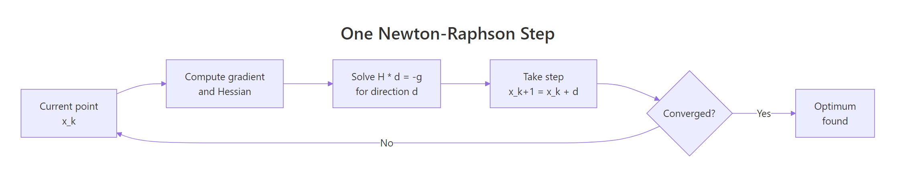
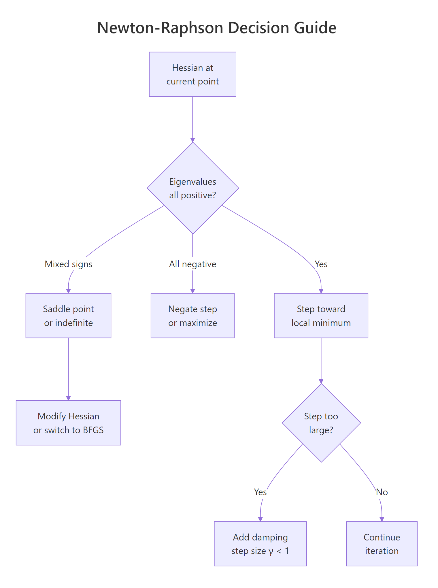
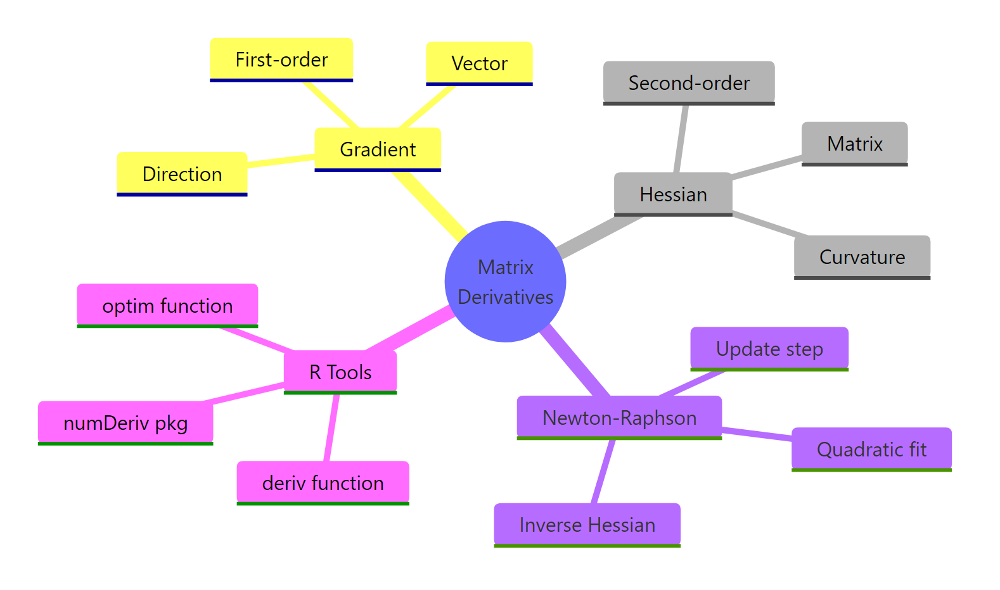

Matrix Derivatives & the Hessian in R: Newton-Raphson Optimization
Matrix derivatives generalize the scalar derivative to vector-valued inputs: the gradient packs the first partial derivatives into a vector, and the Hessian packs the second partial derivatives into a matrix. The Newton-Raphson method uses both to leap toward an optimum in one curvature-aware step, and R gives you everything you need with deriv(), numDeriv, and a few lines of solve().
What does taking a derivative of a matrix actually mean?
When a function takes one input, its derivative is a single number. When it takes a vector of inputs, the first derivative is a vector (the gradient) and the second derivative is a matrix (the Hessian). That structural change is what "matrix derivatives" really refers to. R has both symbolic differentiation (deriv(), built into base R) and numeric differentiation (numDeriv package). Here is the payoff in three lines, using deriv() on $f(x, y) = x^2 + 2y^2 + xy$ at the point $(1, 1)$.
That single call returned three things at once: the function value (4), the gradient (3, 5), and the Hessian matrix [[2, 1], [1, 4]]. The gradient is a row vector of first partial derivatives, and the Hessian is the matrix whose entry $h_{ij}$ is $\partial^2 f / \partial x_i \partial x_j$. Schwarz's theorem guarantees the Hessian is symmetric for any twice-continuously-differentiable function, so the off-diagonals match. We will use this same trick repeatedly throughout the article.
Try it: Use deriv() to compute the gradient of $g(x, y) = 3x^2 + xy + y^2$ at the point $(2, -1)$. Save the result to ex_g_at_pt.
Click to reveal solution
Explanation: $\partial g / \partial x = 6x + y = 12 - 1 = 11$ and $\partial g / \partial y = x + 2y = 2 - 2 = 0$, matching the row vector returned by deriv().
How do you compute the gradient and Hessian numerically?
deriv() is exact, but it needs an algebraic expression. When your function is a closure, a simulation, or a black-box loss that has no clean formula, switch to numeric differentiation via the numDeriv package, which uses Richardson extrapolation on finite differences. The same gradient and Hessian come back as plain R vectors and matrices.
The numeric output matches the symbolic output to about six decimal places. grad() returns a plain numeric vector and hessian() returns a square matrix, which is exactly the shape you want for linear-algebra calls like solve(). From now on we will mostly call f_fn (the closure) instead of f_expr, so we can plug it into any optimizer.
Numeric differentiation also works when there is no formula at all. Below we minimize the sum of squared residuals for a tiny linear regression where the parameters are an intercept and a slope. The function is built from data, not from symbols, but numDeriv does not care.
The gradient at $(0, 0)$ points sharply uphill in both directions (intercept and slope), telling us we are far from the optimum. The Hessian is the familiar $2 X^\top X$ matrix from linear regression, and because it is positive definite (we will check that next), the loss surface is a single bowl and Newton's method will find the bottom in one step from any starting point.
numDeriv for closures, simulation outputs, complicated likelihoods, or any time you don't trust your hand-derived gradient.Try it: Use numDeriv::hessian() to compute the Hessian of $g(\mathbf{x}) = x_1^4 + x_2^4$ at the point $(1, 2)$. Save it to ex_H.
Click to reveal solution
Explanation: $\partial^2 g / \partial x_i^2 = 12 x_i^2$ and the cross-partials are zero, giving a diagonal matrix with $12$ at $(1,1)$ and $48$ at $(2,2)$.
Why does the Hessian matter for optimization?
The Hessian is the second-order shape of the loss surface near a point. Just as the second derivative of a one-dimensional function tells you whether a critical point is a minimum (positive), a maximum (negative), or an inflection (zero), the eigenvalues of the Hessian classify a multidimensional critical point. All positive eigenvalues means a local minimum (a bowl). All negative means a local maximum (a hilltop). Mixed signs means a saddle, where some directions go down and others go up. This single fact is the foundation of every second-order optimizer.
Both eigenvalues are strictly positive, so the origin is a local minimum of $f(x, y) = x^2 + 2y^2 + xy$. Their values $3 \pm \sqrt{2}$ also tell us the curvature in the two principal directions: about $4.41$ along the steepest direction, $1.59$ along the shallowest. The ratio $4.41 / 1.59 \approx 2.78$ is the condition number; high condition numbers signal stretched, ill-conditioned bowls that slow most optimizers down.
Now contrast that with a saddle. The function $s(x, y) = x^2 - y^2$ has a critical point at the origin, but its curvature is positive in $x$ and negative in $y$.
One positive eigenvalue, one negative, so the origin is a saddle, not an extremum. Mixed signs are also why naive Newton-Raphson can mistakenly march toward saddles in deep learning loss surfaces, an issue we will return to in the failure-modes section.
Try it: Build the Hessian of $h(x, y) = x^2 + xy + 4y^2$ at $(0, 0)$ and use eigen() to confirm the origin is a local minimum.
Click to reveal solution
Explanation: Both eigenvalues are positive, so the Hessian is positive definite and the origin is a local minimum.
How does Newton-Raphson use the gradient and Hessian?
Newton-Raphson treats the loss surface as a quadratic bowl near the current point and jumps to the bottom of that bowl in one step. The trick is the second-order Taylor expansion: near $\mathbf{x}_k$, the function looks like
$$f(\mathbf{x}) \approx f(\mathbf{x}_k) + \nabla f(\mathbf{x}_k)^\top (\mathbf{x} - \mathbf{x}_k) + \tfrac{1}{2} (\mathbf{x} - \mathbf{x}_k)^\top H(\mathbf{x}_k) (\mathbf{x} - \mathbf{x}_k).$$
Setting the gradient of this quadratic to zero gives the Newton step:
$$\mathbf{x}_{k+1} = \mathbf{x}_k - H(\mathbf{x}_k)^{-1} \nabla f(\mathbf{x}_k).$$
Where $\nabla f$ is the gradient (an $n \times 1$ vector) and $H$ is the Hessian (an $n \times n$ matrix). The whole algorithm is "fit a quadratic, jump to its minimum, repeat."

Figure 1: One Newton-Raphson step: solve H d = -g, take the step, repeat until converged.
Let's take exactly one such step on $f(x, y) = x^2 + 2y^2 + xy$ from $(2, 2)$. Because $f$ is itself quadratic, one Newton step lands exactly at the minimum, no matter where we start.
The step vector solve(H0, -g0) is the Newton direction, and x0 + step1 lands at the true minimum $(0, 0)$. We used solve(H, -g) instead of -solve(H) %*% g because solving the linear system is faster and numerically more stable than computing the explicit inverse, especially when the Hessian is large or ill-conditioned. This is a habit worth forming.
solve(H, -g) returns the same direction as -solve(H) %*% g but in less time and with smaller numerical error. The explicit inverse is rarely the right tool.Try it: Take one Newton step on $f(x, y) = (x - 3)^2 + (y + 1)^2$ starting from $(0, 0)$. Because the function is quadratic with no cross-term, one step should land exactly at $(3, -1)$.
Click to reveal solution
Explanation: A quadratic function is exactly its own second-order Taylor expansion, so a single Newton step always lands at the true minimum.
How do you implement Newton-Raphson in R from scratch?
Wrap the one-step formula in a loop with a convergence check, a maximum iteration count, and a trace of intermediate iterates. Numeric differentiation makes this a 15-line function that works on any scalar-valued R function.
The function returns a list with the final parameters, the number of iterations used, and a trace of every iterate so we can plot or inspect the path. The convergence test is ||g|| < tol, which fires when the gradient is essentially zero. Let's run it on a non-quadratic test problem, $f(x, y) = e^x - x + y^2$, which has a unique minimum at $(0, 0)$.
The optimizer converged to the true minimum in six iterations, and the final gradient norm is below $10^{-8}$. Because the function is not quadratic, Newton-Raphson does not finish in one step, but it still exhibits the famous quadratic convergence near the optimum: the number of correct digits roughly doubles per iteration.
Try it: Run newton_raphson() on $f(x, y) = (x - 1)^2 + (y - 2)^2 + (x - 1)(y - 2)$, starting from $(0, 0)$. Confirm it lands at $(1, 2)$.
Click to reveal solution
Explanation: The function is quadratic, so Newton converges in a single step regardless of the starting point.
When does Newton-Raphson fail and what should you do?
Pure Newton-Raphson is fast when the quadratic approximation is good, but four failure modes wreck convergence in practice. The Hessian can be indefinite (mixed-sign eigenvalues) so the step heads toward a saddle, not a minimum. The Hessian can be nearly singular, producing huge garbage steps. The quadratic fit can be poor far from the optimum, so a full step lands somewhere worse than where you started. And in high dimensions, building the $n \times n$ Hessian becomes expensive enough that quasi-Newton methods are preferred. The decision tree below summarizes how to react.

Figure 2: Decision guide for handling Hessian failure modes during optimization.
Here is divergence in action. We minimize $f(x, y) = -\log(x) - \log(y) + x + y$, which has a unique minimum at $(1, 1)$ on the positive orthant. From the starting point $(3, 3)$, a full Newton step overshoots into negative territory where the logarithm is undefined.
The single Newton step lands at $(-3, -3)$, where the log of a negative number is NaN. The fix is damping: scale the step by a factor $\gamma \in (0, 1]$ that we shrink until the new point actually decreases the objective. This converts pure Newton into a globally convergent algorithm with the same fast local rate.
With backtracking, the same starting point now converges to $(1, 1)$ in a handful of iterations. When even damping is not enough, switch to a quasi-Newton method like BFGS, which approximates the Hessian from gradient differences and never requires the explicit second-derivative matrix. R's built-in optim() ships with BFGS and is a solid first stop for any unconstrained problem.
optim() returned the same minimum without any Hessian computation. For most problems, BFGS is more robust than pure Newton because it implicitly damps via its line search, and L-BFGS scales to thousands of parameters without storing a dense $n \times n$ matrix.
kappa(H) before trusting a Newton step. If the condition number exceeds about $10^{10}$, regularize with H + lambda * diag(n) (Levenberg-Marquardt style) before solving, or switch to BFGS.Try it: Add a damping check to newton_raphson() so it accepts the step only when $f$ decreases, halving $\gamma$ otherwise. Test it on log_loss from $(5, 5)$.
Click to reveal solution
Explanation: The line-search loop shrinks $\gamma$ until the candidate point is in the domain and improves the objective, which makes the algorithm globally convergent.
Practice Exercises
These three problems weave the concepts together. Use distinct variable names so they don't collide with the tutorial code that came before.
Exercise 1: Find a non-trivial minimum with newton_raphson()
Minimize $f(x, y) = (x^2 + y - 11)^2 + (x + y^2 - 7)^2$ (the Himmelblau function) starting from $(0, 0)$. Compare the result to optim(method = "BFGS").
Click to reveal solution
Explanation: Both methods land at the same Himmelblau minimum near $(3, 2)$. Different starting points converge to different local minima; that is a Himmelblau feature, not a bug.
Exercise 2: Fit logistic regression by hand and verify against glm()
Build a logistic regression on mtcars, predicting am from mpg and hp. Write the negative log-likelihood, run newton_damped() from a zero starting vector, and compare your coefficients to glm().
Click to reveal solution
Explanation: The hand-built Newton-Raphson fit matches glm() to four decimals. glm() itself uses iteratively reweighted least squares, which is mathematically equivalent to Newton's method on the binomial NLL.
Exercise 3: Classify any critical point from its Hessian
Write a function inspect_critical_point(f, x) that returns one of "minimum", "maximum", "saddle", or "degenerate" based on the eigenvalues of the Hessian at x. A degenerate point has at least one eigenvalue with absolute value below $10^{-8}$.
Click to reveal solution
Explanation: All-positive eigenvalues mean a positive-definite Hessian and a local minimum. All-negative gives a maximum. Mixed signs indicate a saddle. Tiny eigenvalues mean the second-order test is inconclusive and you need higher-order information.
Complete Example
Below we tie the entire pipeline together: define a real loss function (logistic regression NLL on mtcars), fit it with our from-scratch damped Newton-Raphson, and verify against R's industrial-strength glm(). This is the same workflow that powers maximum-likelihood estimators across statistics, from logistic regression to Cox models.
The two columns agree to four decimals. The Hessian of the binomial NLL has the closed form $X^\top W X$ with $W = \mathrm{diag}(p_i (1 - p_i))$, which is why this loss is convex and Newton converges so cleanly. The same matrix-derivative recipe extends to Poisson regression, multinomial regression, and any generalized linear model with a canonical link.
Summary
The mental model: gradient is the first-order shape (uphill direction), Hessian is the second-order shape (curvature), Newton-Raphson uses both to leap to the minimum of a local quadratic fit.

Figure 3: Overview of matrix derivatives and Newton-Raphson in R.
| Concept | What it is | R tool |
|---|---|---|
| Gradient | Vector of first partial derivatives, $\nabla f$ | numDeriv::grad(), deriv() |
| Hessian | Matrix of second partial derivatives, $H$ | numDeriv::hessian(), deriv(..., hessian = TRUE) |
| Critical-point test | Eigenvalues of $H$ | eigen(H)$values |
| Newton step | $\mathbf{x}_{k+1} = \mathbf{x}_k - H^{-1} \nabla f$ | solve(H, -g) |
| Damped Newton | Scale step by $\gamma$ until $f$ decreases | Backtracking line search |
| Quasi-Newton fallback | BFGS approximates $H$ from gradients | optim(method = "BFGS") |
Use deriv() when you have a formula, numDeriv for closures and black-box losses, pure Newton-Raphson when the Hessian is well-conditioned and the start is close, damped Newton when you might overshoot, and BFGS when you don't want to compute the Hessian at all.
References
- R Core Team. Symbolic and Algorithmic Derivatives of Simple Expressions (
?derivdocumentation). Link - Gilbert, P. and Varadhan, R. numDeriv: Accurate Numerical Derivatives (CRAN package). Link
- Nocedal, J. and Wright, S. Numerical Optimization, 2nd Edition. Springer (2006). Chapters 3 and 6 on Newton's method and quasi-Newton methods.
- Wikipedia. Newton's method in optimization. Link
- Peng, R. Advanced Statistical Computing, "The Newton Direction." Link
- R Core Team. General-purpose Optimization (
?optimdocumentation). Link - Givens, G. H. and Hoeting, J. A. Computational Statistics, 2nd Edition. Wiley (2013). Chapter on optimization.
- Tibshirani, R. Newton's Method (Convex Optimization lecture notes, CMU 10-725). Link
Continue Learning
- Maximum Likelihood Estimation in R, the most common Newton-Raphson use case in statistics, with
optim()andmle()recipes. - Eigenvalues and Eigenvectors in R, covering the
eigen()test we used to classify critical points in depth. - Solving Linear Systems in R, covering what
solve(H, -g)is doing under the hood, including LU decomposition and condition numbers.